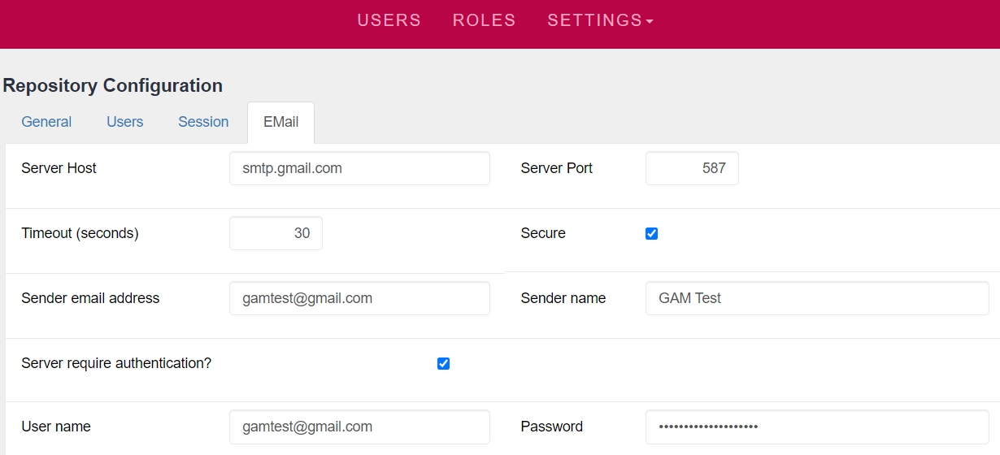
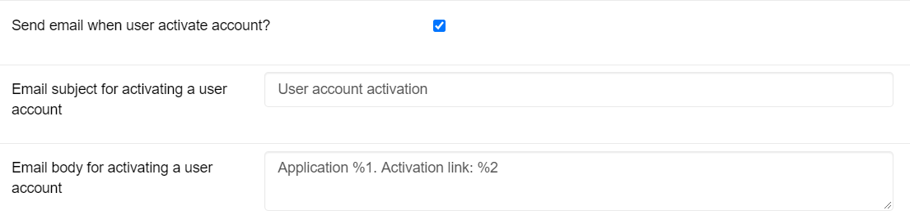
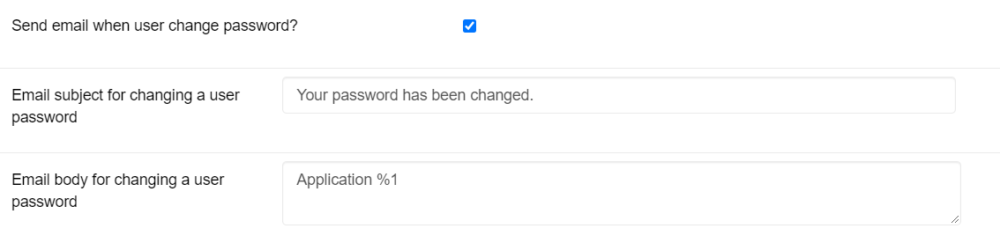
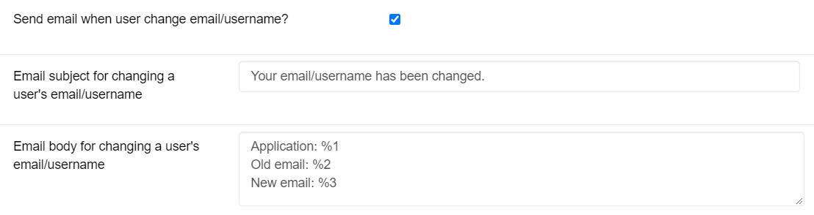
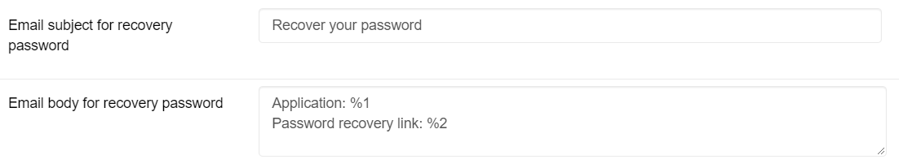

GAM allows you to configure an email server to send emails to users when they want to be notified in any of the following situations:
- Account activation.
- The account password was changed.
- The account email address or username were changed.
- Password recovery
- Send password when using the One Time Password method. Read GAM - One Time Password (OTP)
The configuration for sending emails can be found in Settings > Repository Configuration > Email Tab.

Figure 1: Example of configuration using Gmail server.
- Server Host: Domain name of the email server to be used.
- Server Port: Port on which the service is located on the email server.
- Timeout (seconds): Time (in seconds) that the server waits to receive the response.
- Secure: Indicates whether a secure connection (HTTP or HTTPS) with the server is used.
- Sender email address: Email address of the sender.
- Sender name: Name of the sender. This name will appear in the email message sent next to the email address.
- Server require authentication?: Indicates whether the server requires authentication to proceed with sending the email. If authentication is required, the sender’s credentials will be requested:
- Username: Sender's username.
- Password: Password of the corresponding sender.
After configuring the email server to be used, you can configure the following properties that will notify the user depending on the action performed. These properties are found in Settings > Repository Configuration > Email Tab:
- Send email when user activate account?: If this option is enabled, when users register with the application, an email will be automatically sent to them containing the account activation link. When enabling this option, the Account Activation Object property must be configured in the corresponding application (read the section Configuration of the Account Activation Object property). The account activation link will be valid for the time defined in the property User automatic activation timeout located in the menu Repository Configuration > Users Tab.
- Email subject for activating a user account: Indicates the subject of the email to be sent to activate the account.
- Email body for activating a user account: Indicates the body of the email to be sent to activate the account. If the characters %1 and %2 are included in the email body, these values will be replaced with the application name and the account activation link, respectively. On the other hand, if only %1 is found in the email body, it will be replaced with the link to activate the account. If neither %1 nor %2 are included, GAM automatically adds the account activation link at the end of the email body.

Figure 2: Example of email delivery configuration to activate the account.
- Send email when user change password?: If this option is enabled, when a user's password is changed, the user will be automatically notified by email about it.
- Email subject for changing a user password: Indicates the subject of the email to be sent when a user's password is changed.
- Email body for changing a user password: Indicates the body of the email to be sent when a user's password is changed. Optionally, if %1 is included in the email body, it will be replaced with the application name.

Figure 3: Example of email delivery configuration when the password is changed.
- Send email when user change email address/username?: If this option is enabled, when the email address or username of an account are modified, the user associated with that account will be automatically notified by email about it. If the email address is changed, notifications will be sent to the old email address and to the new email address.
- Email subject for changing a user's email address/username: Indicates the subject of the email to send when the email address/username of a user account are changed.
- Email body for changing a user's email address/username: Indicates the body of the email to send when the email address/username of a user account are changed. If %1, %2, and %3 are included in the email body, these elements will be replaced with the application name, old email address, and new email address, respectively. If only %1 and %2 are included in the email body, they will be replaced with the old email address and the new email address, respectively. If only %1 is found in the email body, it will be replaced with the new email address/username.

Figure 4: Example of configuration for sending an email when the email address/username are changed.
- Send email for password recovery?: If this option is enabled, end users will be able to recover their password with their registered email address.
- Email subject for recovery password: Indicates the subject of the email to send when a user wants to recover their account password.
- Email body for recovery password: : Indicates the body of the email to send when a user wants to recover their account password. If %1 and %2 are included in the email body, they will be replaced with the application name and the password recovery link, respectively. If only %1 is included in the email body, it will be replaced with the password recovery link. If neither %1 nor %2 are included, GAM automatically adds the password recovery link at the end of the email body.

Figure 5: Example of configuration to send email to recover the password.
When the property Send email when user activates account? mentioned above is activated, it is necessary to configure the Account Activation Object property located in Settings > Applications > <Application_name>. This property allows you to assign the object or URL that will be in charge of activating the user. The example object distributed is GAMExampleActivateUserAccount. Below are the three formats accepted in the field Account Activation Object:
- The name of the object as found in the KB. GAM will automatically add the package containing it, as well as the extension, virtual directory, server host and port (this data is in the Environment Settings tab). In addition, '?%1' will be added at the end, where %1 will be replaced with the activation key.
Example:
- NET:
Account Activation Object: GAMExampleActivateUserAccount
Link emailed to the user:
http://gamidp.com/IPServerNetSQL/GAMExampleActivateUserAccount.aspx?00926da5925445a19f57c383b6b2f3d474318284f2cbeadcfd394cb9814a80943b2830ce
- JAVA: (The object name must be in lowercase)
Account Activation Object: gamexampleactivateuseraccount
Link emailed to the user:
http://gamidp.com:8080/IPServerJavaSQL/com.ipserver.gamexampleactivateuseraccount?4416647a41b5472d8428aa0da421a9ab90424358ad0b09d1ddbc45d3b37ce8d633d698c2
- The name of the object with the corresponding package to which it belongs, the extension, and the parameters defined by the developer. In this case, GAM will automatically include only the virtual directory and the server host and port. If %1 is not included, GAM will add it automatically at the end of the URL. In this case, you need to check that the URL is well formed; otherwise, the end user will receive an invalid link.
Example:
- NET:
- Case 1: Named parameters
Account Activation Object: GAMExampleActivateUserAccount.aspx?param1=value1¶m2=value2&ActivationKey=%1
Link emailed to the user:
http://gamidp.com/IPServerNetSQL/GAMExampleActivateUserAccount.aspx?param1=value1¶m2=value2&ActivationKey=0d40f7dfd06244dbbe001deeb1beabc9558233772ce48851a5414f39bf0efb30d646434a
- Case 2: Positional parameters
Account Activation Object: GAMExampleActivateUserAccount.aspx?%1,value1,value2
Link emailed to the user:
http://gamidp.com/IPServerNetSQL/GAMExampleActivateUserAccount.aspx?7cfd8cc218104b6da6b9b2e2ba3d3cc1310342080d9a497fff9346bb939417a67bd35ffe,value1,value2
- JAVA:
- Case 1: Named parameters
Account Activation Object: com.ipserver.gamexampleactivateuseraccount?param1=value1¶m2=value2&ActivationKey=%1
Link emailed to the user:
http://gamidp.com:8080/IPServerJavaSQL/com.ipserver.gamexampleactivateuseraccount?param1=value1¶m2=value2&ActivationKey=1d346739866f4ab3a4c16e43a3af40b52087192559aa08887595419fa7b3a3a481f1d3f2
- Case 2: Positional parameters
Account Activation Object: com.ipserver.gamexampleactivateuseraccount?%1,value1,value2
Link emailed to the user:
http://gamidp.com:8080/IPServerJavaSQL/com.ipserver.gamexampleactivateuseraccount?16a1c395dfdd462a802608c82f4e33882282348878ad1eb72dea49d68fe09c2493f7b703,value1,value2
3. Full URL to the object. In this case, you can place the URL of the object that will activate the user, which doesn’t have to be in the same KB or on the same server used for development. You must include the package where the object is located, as well as the extension, virtual directory (if necessary), server host and port. In this case, GAM doesn't include any data; that is, the URL will not be altered by GAM.
Example: The examples are similar to the previous point, except that in this case the full URL must be included (both for Named parameters and Positional parameters).
Account Activation Object: http://gamidp.com/IPServerNetSQL/GAMExampleActivateUserAccount.aspx?param1=value1¶m2=value2&ActivationKey=%1
Link emailed to the user: (The link received will be similar to the URL entered except for modifications made to the parameters passed in the URL)
http://gamidp.com/IPServerNetSQL/GAMExampleActivateUserAccount.aspx?param1=value1¶m2=value2&ActivationKey=301467e8d0ab461ba3aabff4af86a667995575988f5032f33f7741c886cc1f7bbcd7adf8
Account Activation Object: http://localhost:8080/IPServerJavaSQL/com.ipserver.gamexampleactivateuseraccount?%1,value1,value2
Link emailed to the user: (The link received will be similar to the URL entered except for modifications made to the parameters passed in the URL)
http://localhost:8080/IPServerJavaSQL/com.ipserver.gamexampleactivateuseraccount?85ff2cccf30a438eb6ff06b3c100539464262222da484f79160148dba83672fc07b0e222,value1,value2
Note: Remember to configure the properties found in Settings > Applications > Environment Settings Tab. By default, the values set in the KB are assigned. If there are several environments (Net, Java, NetCore) in a KB that use the same GAM DB, it is necessary to configure the environment being used at the moment. If you use Positional parameters, remember that the position of each parameter in the URL must match the position in which they were defined in the Rules section in the corresponding object of the KB. %1.